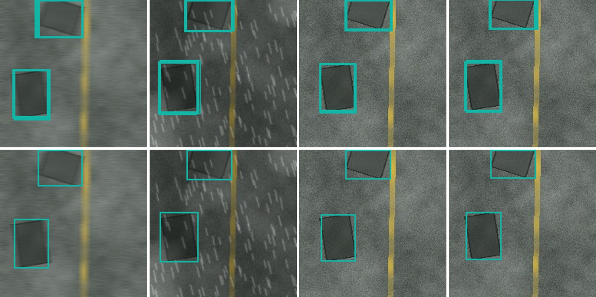
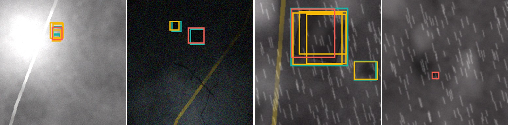
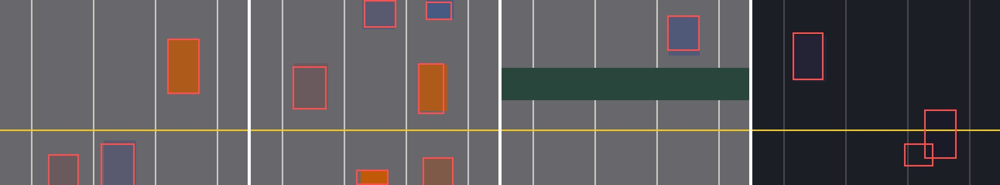

A colleague fine-tuned weights under a non-commercial licence on the department's own crops. It is the best model in the table. A contractor will run the units under a paid contract. What happens next?
Deploy it: fine-tuning on its own data made the weights the department's
Do not deploy it: record that, and compare again from weights the rule allows
Deploy it: the library is under Apache-2.0
Deploy it as a pilot: a pilot is not commercial use
Why. What runs on the unit is the weights, and their terms forbid this use. Starting weights are chosen before any training: the deployment record comes first.
Detection
A detector answers three questions for every object at once
Where
A box: two corners in pixels of the frame.
What
A class: for Rasid, pothole or patch.
How sure
A score from 0 to 1. Everything downstream depends on where you cut it.
Why patch is a class. A repaired pothole is the thing a pothole detector most often takes for a pothole. Teaching the detector to name it is cheaper than filtering it afterwards.
How it works
Every cell of a grid votes for a class and draws a box
1 · TrunkResNet-18 turns a 192-pixel frame into a 24 by 24 grid of features
→
2 · Score mapper cell and class: is the centre of an object here?
→
3 · Box mapper cell: distances to the left, top, right and bottom edge
→
4 · Decodekeep cells above a score, turn distances into corners
Neighbouring cells see the same pothole. Each draws its own box for it. The raw output holds several boxes per object.
Overlap
Intersection over union is the ruler for "the same box"
IoU of two boxes
IoU = area of overlap / area covered by either
Identical boxes: 1. Boxes that do not touch: 0.
A 40 by 40 box against the truth
IoU
Shifted by 3 pixels each way
0.75
Shifted by 5 pixels each way
0.62
Shifted by 8 pixels each way
0.47
Same centre, 6 pixels of margin all round
0.59
Two common thresholds. At 0.5 a box counts when it is roughly on the object. At 0.75 it has to fit.
Suppression
Non-maximum suppression keeps the best box and drops its echoes

Top: raw boxes above a score of 0.3. Bottom: after suppression at IoU 0.5.
Sort the boxes of one class by score
Keep the best one
Drop every other box that overlaps it by more than a threshold
Repeat with what is left
The metric
Sort the detections by score and walk down the list
Score
Counts as
Precision
Recall
0.9
true positive
1/1
1/2
0.8
false positive
1/2
1/2
0.7
true positive
2/3
2/2
Two potholes exist. Each row is the result if the score threshold sat just there
A detection is a true positive when it overlaps a still unclaimed truth box by at least the IoU threshold
Average precision is the area under precision against recall: here 0.5 × 1 + 0.5 × 2/3 = 0.83
From the lab
A short schedule moved AP at 0.75 far more than AP at 0.5
Mean over pothole and patch
AP at IoU 0.5
AP at IoU 0.75
Warm checkpoint
0.871
0.306
After two passes over 400 frames
0.894
0.483
Supplied detector, full schedule
0.968
0.785
Report both. AP at 0.5 says the detector finds the objects. AP at 0.75 says its boxes fit. The gap between them names the next problem.
Checkpoint
Which detector for this use?
Detector A scores an AP of 0.90 at IoU 0.5 and 0.70 at IoU 0.75. Detector B scores 0.93 and 0.45. The department will use the boxes to estimate how much asphalt each repair needs. Which do you choose?
B: it finds more potholes, and finding them is what counts
B: AP at IoU 0.5 is the standard metric for detectors
A: it has the higher score at both thresholds
A: its boxes fit the potholes, and area is read from the box
Why. Area needs boxes that fit, which is what AP at 0.75 measures. B's lead at 0.5 is three points; A's lead at 0.75 is twenty-five.
After the metric
An average precision says how good, never what to do next
41
false alarms beside 148 correct boxes and 10 missed defects, on 180 field frames with the prototype's settings (lab 3.2)
Precision 0.78, recall 0.94: the crews drive to one wrong address in five
More data? A bigger model? A setting?
Each answer costs something different, and only the errors themselves can choose
Types
Every detector error is one of a few types

Red: the box in question. Teal: ground truth. Yellow: other detections. Left to right: localisation, class, duplicate, missed.
Localisation
Class
Duplicate
Missed
Right class, IoU from 0.1 to 0.5
IoU at least 0.5, wrong class
Right and fitting, but a better box holds the object
A truth box no detection came near
From type to work
Each type points to a different piece of work
Type
Usual fix
What it costs
Duplicate
Tighten non-maximum suppression
A setting, no training
Class
More examples of the confused pair, or a clearer definition
Labelling
Localisation
A box guideline everyone follows, a finer grid, a box loss
Relabelling or retraining
Missed
Data of the missed kind: small, dark, in rain. Or a lower score threshold
Collection and labelling
From the lab
Fifty supplied errors, sorted by one rule
Missed18
Localisation14
Duplicate10
Class8
iou = U.box_iou([e["box"]], gts[:, :4])[0]
j = int(iou.argmax())
same = CLASSES[int(gts[j, 4])] == e["cls"]
if iou[j] >= 0.5 and not same:
return "class"
if iou[j] >= 0.5:
return "duplicate"
if iou[j] >= 0.1 and same:
return "localisation"
return "background"
Fifty hand-picked errors say what exists, not what matters. Someone chose them. The bars are that person's sample.
What matters
Ask an oracle what each fix could be worth
All errors of one type repaired
Precision
Recall
Gain in F1
As configured
0.783
0.937
Duplicate
0.897
0.937
+0.063
Missed
0.789
0.968
+0.016
Class
0.783
0.937
0.000
Localisation
0.783
0.937
0.000
The largest gain is also the cheapest fix: suppression set at 0.7 on the prototype lets echoes through. Set it to 0.5, then measure again.
Reporting
A justified next step is one sentence with a number and a cost
Not this
"The detector needs more training data, especially at night."
This
"Fixing duplicates is worth up to +0.063 F1, the largest gain in the oracle table, and costs one setting: suppression from 0.7 to 0.5. Missed objects are next, at +0.016, and need labelled night and rain frames."
This is the evidence for outcome 3: the metrics, the error breakdown, and a next step someone can approve or refuse.
Checkpoint
Which fix do you fund first?
An oracle table for a crack-sealing detector shows: localisation errors repaired +0.09 F1, missed +0.07, class +0.01, duplicate +0.01. The team's boxes come from three annotators with no rule on tightness. What do you propose first?
Write the box-tightness rule, relabel a sample and measure localisation again
Tighten non-maximum suppression, because it needs no training
Train a larger detector on the same labels
Lower the score threshold so that fewer objects are missed
Why. Localisation is the largest gain, and inconsistent boxes are a known cause that a guideline can remove before any training is paid for.
Segmentation
A box cannot measure a crack; a mask can
Semantic segmentation
One class per pixel: crack or road. Enough for length and area. What Rasid needs.
Instance segmentation
A separate mask per object: this crack and that crack. Needed to count or follow objects.
The cost
Masks are the most expensive labels to draw, and thin structures are the hardest to draw consistently.
In Al-Manar's frames crack pixels are 1.1% of all pixels. A model that answers "road" everywhere is 98.9% accurate and useless.
How it works
Down to understand, back up to draw
1 · Encoderthe same ResNet-18 trunk shrinks the frame to one eighth
→
2 · Decoderupsamples step by step back to full size
→
3 · Skip connectionshand the fine detail of early layers across
→
4 · One score per pixelcut at 0.5 for the mask
A crack two pixels wide does not exist at one-eighth resolution. Without the skip connections the decoder would have to guess where it was.
Overlap metrics
IoU and Dice count the same three things differently
From pixels in both, in the prediction, in the truth
IoU = both / (prediction + truth − both)
Dice = 2 × both / (prediction + truth)
Dice = 2 × IoU / (1 + IoU), so Dice is always the larger.
Both ignore the pixels that are road in both masks, which is nearly all of them
An IoU of 0.38 is a Dice of 0.55: say which one you report
A predicted line one pixel beside a two-pixel crack loses half its overlap
"Dark" is not "crack". The rule also marks potholes, patch seams and shadows, and it finds nothing when the whole frame is dark.
From the lab
The baseline fails where the light changes; the segmenter holds
IoU on validation frames
All
Day
Glare
Dust
Rain
Night
Frames
80
37
13
13
11
6
Thresholding baseline
0.224
0.266
0.072
0.215
0.258
0.008
Segmenter, three passes over 240 frames
0.378
0.408
0.385
0.360
0.368
0.294
Supplied segmenter, full schedule
0.809
0.861
0.740
0.824
0.842
0.618
Six night frames. The night column is the weakest of every row and the least certain. It is the next data request, not a finding.
Reading the number
An overlap score needs its object beside it
The wrong comparison
"The segmenter's IoU is 0.6 and the detector's AP is 0.9, so the segmenter is the weak part." Two metrics on two tasks share no scale.
The right ones
Against the baseline on the same frames. Against the same model under another light. With a tolerance of two pixels. And by looking at twenty masks.
For the maintenance team, convert: metres of crack found against metres present is a number they can plan with. IoU is the engineer's number.
Checkpoint
Why is the overlap low?
A crack segmenter scores an IoU of 0.52. Its masks, overlaid on the frames, follow every crack and look about one pixel wider than the labels. What do you report?
The model is poor and needs a larger backbone
Pixel accuracy, which is 99% and describes the model better
The IoU with the object's width, and precision and recall at a two-pixel tolerance
Dice, because it is higher for the same masks
Why. The masks find the cracks and differ in width. A tolerance score separates "missed the crack" from "drew it a little thick", which IoU on thin lines cannot.
Video
To count vehicles, you have to know which box is the same vehicle

Al-Manar's four kinds of clip: day, queue, gantry, night. The yellow line is where vehicles are counted.
How it works
Tracking by detection: link each new box to the track it overlaps most
tracks for 16 vehicles in a daytime clip, with a tracker that has no patience (lab 3.4)
The detector misses a vehicle for one frame; its track closes
The next detection opens a new track with a new identity
An identity switch: the track that covers a true vehicle changes from one frame to the next
Two measures, two questions. Count error asks whether the total is right. Identity switches ask whether each vehicle stayed one vehicle.
Counting rules
Count a track once, the first time its centre crosses the line
Every crossing
Add one whenever a box centre moves from above the line to below it.
14
counted in a queue clip with 13 true crossings
Once per track
A track counts at its first crossing and never again.
13
counted in the same clip
From the lab
Two settings removed nearly every count error
Kind of clip
True crossings
Patience 0, minimum hits 1
Patience 5, minimum hits 4
Count error
Switches
Count error
Switches
Day
38
3
67
0
1
Queue
39
5
106
0
18
Gantry
39
4
105
0
40
Night
35
14
172
1
6
Patience lets a track survive missed frames. Minimum hits ignores tracks that live two or three frames: the headlight reflections.
What the numbers allow
A right count with broken tracks is ready for counting and for nothing else
Needs the count only
Vehicles per hour across one line. The gantry clips count correctly because the line lies beyond the gantry.
Needs identities
Speed between two lines, turning movements, time spent waiting. Forty switches make each of these wrong.
Where the line is drawn is a design decision. Put it where the camera sees clearly. Move the gantry over the line and the counts drop.
Checkpoint
Is this counter ready?
On a new camera the tracker reports 52 crossings against 50 true ones, with 3 identity switches. The clips are at dusk, and short tracks appear beside some vehicles. Which change do you try first?
Require more hits before a track is counted
Raise the patience so that tracks survive longer gaps
Count every crossing of the line, not one per track
Retrain the detector on dusk frames before changing anything
Why. An overcount with few switches and short tracks beside vehicles points at false tracks from reflections. They live a few frames; a minimum number of hits removes them.
Day 3 recap
Three things to keep
Two thresholds, two messages
AP at 0.5 says the objects are found, AP at 0.75 says the boxes fit. Rasid's short schedule: 0.89 and 0.48.
Type the errors, then price the fixes
Fifty errors showed mostly misses. The oracle table said duplicates: +0.063 F1 for one setting.
Beat the cheap baseline, name the metric
Thresholding 0.22, the segmenter 0.81 IoU. A count can be right with 40 identity switches: say what it is fit for.
Tomorrow
Day 4 · Fit the budget and release
The detector leaves the training framework, meets the roadside unit's budget, faces rain, glare, night and a moved camera, and gets a release decision.
Day 4 runs on a laptop processor: no GPU runtime is needed
Lab 4.2 measures latency: close other programs before you run it
Think about your capstone: an inspection service or a counting service